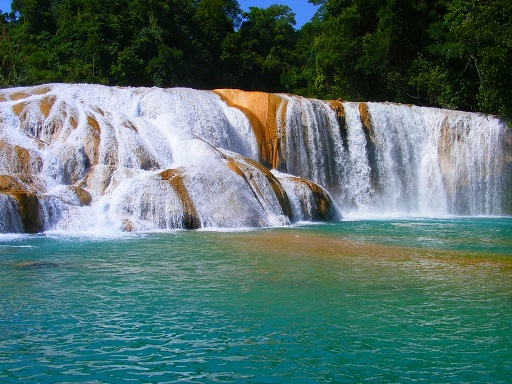
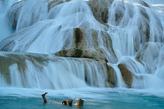
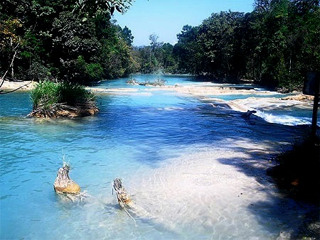
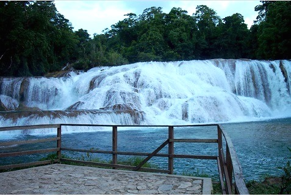
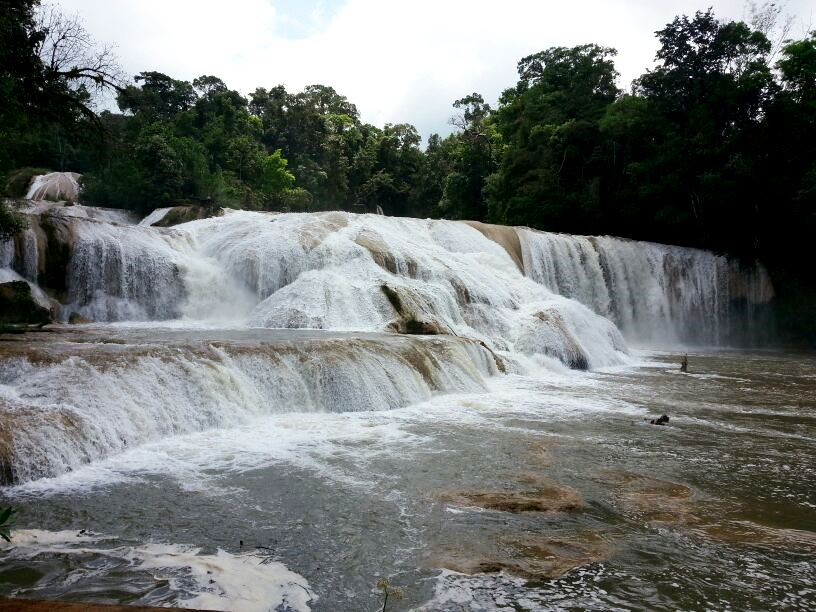

Serie de cascadas que se forman al descender el Río Agua Azul de manera escalonada, creando una serie de estanques ó albercas naturales que son contenidos por diques calcáreos. El intenso color azul turquesa que poseen en épocas de secas, lo cual en parte las ha hecho famosas, es debido en gran medida al lecho calizo del río. Esta coloración, aunada al intenso verde de la vegetación, a la brisa constante y al sonido acuático inagotable, contribuye a hacer de este sitio, sin duda alguna, uno de los más hermosos e inolvidables espectáculos naturales de la República Mexicana. Para aquellos que gustan de la aventura, pueden alcanzar, con la ayuda de guías locales, otras cascadas todavía más espectaculares, pues la escalera continúa aguas abajo hasta que el río se precipita al Tulijá, formando una de las más bellas cortinas de agua.
Se localiza a 64 Km. de la ciudad de Palenque a Ocosingo, por la carretera federal 199. De Tuxtla Gutiérrez a 240 Km. (1 hora de recorrido partiendo de la ciudad de Palenque).
Se encuentra a 59 km de Ocosingo-Palenque carretera federal 199, a mano izquierda aparece un ramal de 4 km a la cascada hasta el municipio de Tumbalá, a 50 Km al sur de la Ciudad de Palenque, por la carretera núm. 199 con rumbo a Ocosingo. Se localiza a 240 Km. de Tuxtla Gutiérrez.
En el lugar usted puede practicar actividades de esparcimientos como:
* Natación, Fotografía
* Descenso en ríos, buceo
* Paseos a caballo, Excursionismo
* Campismo y actividades al aire libre





Posicione el mouse o de click sobre las Imágenes.
{kind=link}
{kind=link}
{kind=link}
{kind=link}
{kind=link}